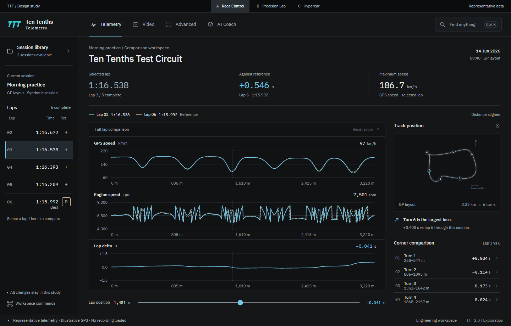
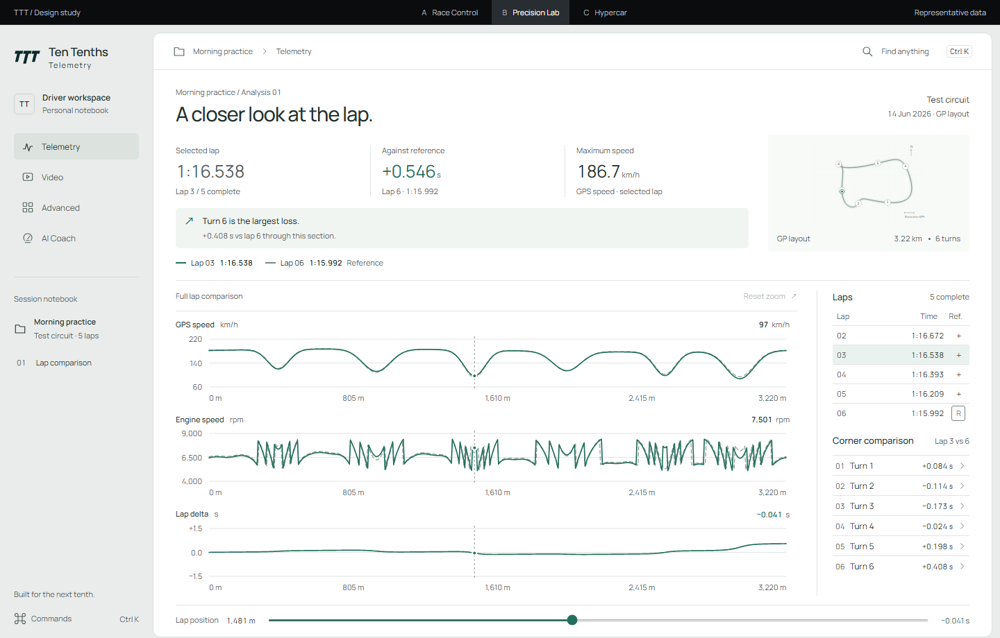
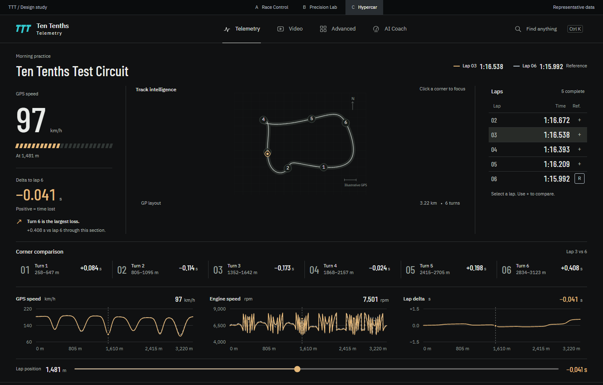

A / Race Control
A precise engineering workspace. Persistent lap context and wide, aligned channels.
Working comparison studies. One shared lap, three distinct workspaces.

A precise engineering workspace. Persistent lap context and wide, aligned channels.

A refined analysis notebook. Quiet hierarchy, a light sheet, and a marginal lap index.

A track-centered instrument panel. Expressive timing, continuous surfaces and peer channels.